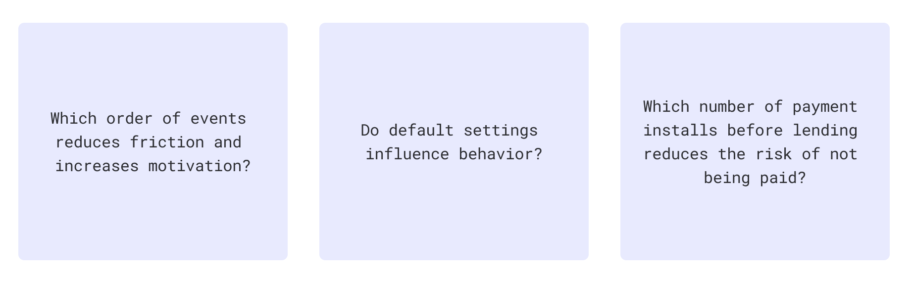

Informal loan clubs in Mexico are called tandas, and 31% of the population participates. While it is a communal way to save money and access credit, it also reflects a distrust of formal financial institutions, their exhausting bureaucracy, high commissions, and their exclusion of low-income segments of the population.
More than 200 interviews revealed that the most common pain points of using traditional tandas were scams and a lack of financial alternatives to banking and investing.
Our app’s value proposition focused on making loans accessible with a low entry cost and a safe, frictionless digital process.
Two core concepts were tested for our MVP using Low and High-fidelity prototypes to achieve 88% of success metrics:
1\ Brand image & closed community
Trust is essential in financial services, so being perceived as an approachable and serious company was a main focus. The idea of a closed community that is only accessible through others’ approval was a new idea that had to be examined too.
2\ Tanda-making process
Tandas are not an easy-to-grasp concept. Breaking down complexity into several digestible steps made it easier for people to focus on one thing at a time and complete the task successfully.
Quickly testing hypotheses became essential to pivot in the right direction by gathering product and user insights. During our product’s lifecycle, I conducted more than 50 experiments to improve the acquisition, conversion, and retention funnel using the Reforge methodology for experimentation.
Behavioural Sciences and Data Analytics were also used to iterate other flows within the app like onboarding, waiting list, tanda status, and payment notifications.
See High-Fidelity Wireframes and Style GuideTandamos is an app that mimics a communal system, present in all LATAM, of accessing credit and saving money. It provides easy access to credit as an alternative to exclusion from the traditional banking system, and scams in the informal market loan. Two rounds of investment were raised during our first year and more than 200 people could benefit from the digital solution.